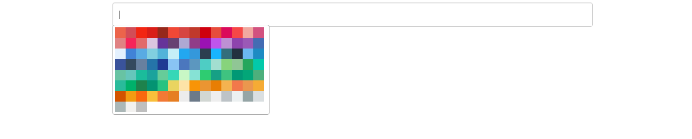
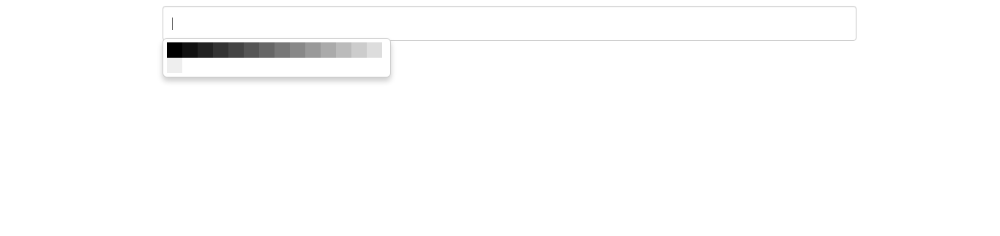
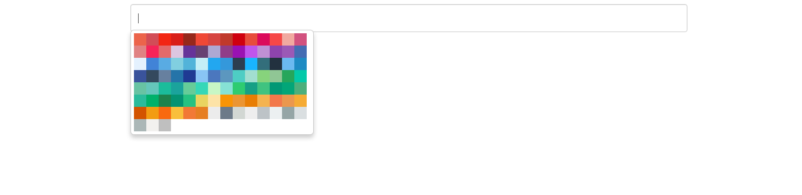
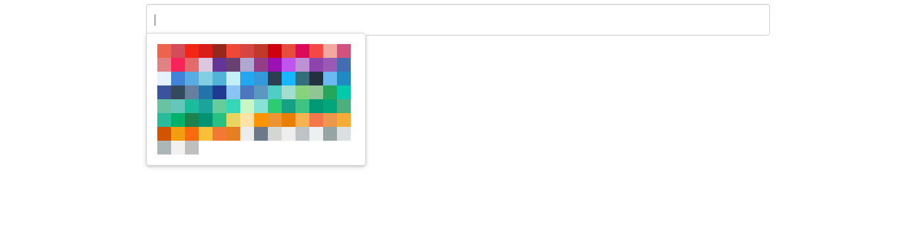

Pick Over (Beta)
Simple color picker for lightweight website.
Documentations
Pickover is so simple and lightweight color picker can customize color, multiple input, simple config and auto position.
Note
This project using jQuery for dependency. Don't forget to include jQuery first.
Installation
- Download / Clone this project from Github
- Copy
pickover.min.jsandpickover.min.cssto your project - Include js file using
<script type="text/javascript" src="pickover.min.js"> - Include css file using
<link rel="stylesheet" href="pickover.min.css"> - Add class
pickoverto your input like<input type="text" name="sample" class="pickover"> - Write config like example below
Default Picker
new PickOver({
scheme: 'flat'
})
Material Color

new PickOver({
scheme: 'material'
})
Flat UI Color
new PickOver({
scheme: 'flat'
})
Customize Color
new PickOver({
scheme: 'flat',
color: ['#000','#111','#222','#333','#444','#555','#666','#777','#888','#999','#aaa','#bbb','#ccc','#ddd','#eee','#fff']
})
Semantic Theme
new PickOver({
theme: 'semantic',
scheme: 'flat'
})
Bootstrap Theme
new PickOver({
theme: 'bootstrap',
scheme: 'flat'
})
Live Demo
Todo
- More Color / Scheme
- More Theme
- Can setting Hue
- Can setting Brightness
- Can pick color from page
- Can pick color from image
- Can pick color from slider